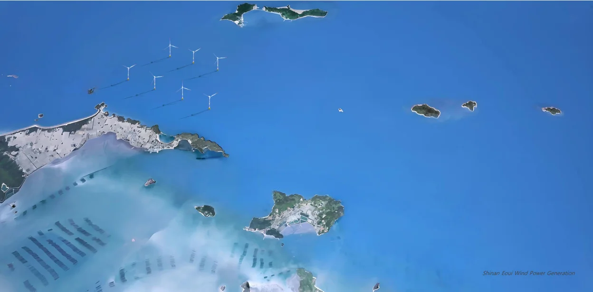

전라남도 신안지역
신안어의
해상풍력발전사업
신안의 바람을 활용한 해상풍력 프로젝트
- 발전 방식
- 해상풍력
- 계획 설치용량
- 99 MW
- 목표 준공
- 2028.12.31 · 목표
- 사업 주체
- 신안어의 풍력발전㈜
- 사업 위치
- 신안군 지도읍 어의리 해상 일원 · 북서측 5km
- 총 투자비
- 6,400억 원 · 자료 기준
제공 260610 PDF 기준 · 공개 전 최신 현황 확인

사업 추진 방향
환경안전지역상생
승인된 내용 제공 시 적용
사업개요 인증서
이미지 클릭 · 확대인증서를 불러오는 중입니다.
추진경과 보기